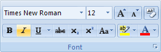
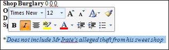
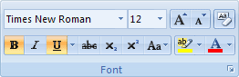
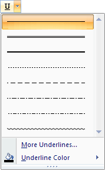
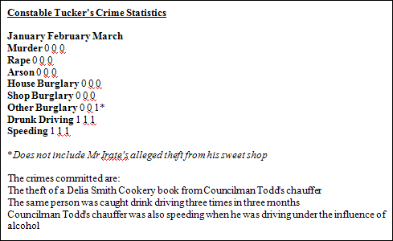

Free
computer Tutorials
|
Free
computer Tutorials
|
|
 home home |
|
|||||
Microsoft Word 2007 to 2010
Italics and Underline in Microsoft WordAgain, we need to highlight the text that we're going to change. We'll turn part of the text to italics. So highlight the following line Does not include Mr Irate's alleged theft from his sweet shop When you have highlighted the text, click the italic icon in the tool
bar. The icon will look like this after you have clicked the letter
"I".  You can also click the letter "I" in the shortcut toolbar, once the text has been highlighted:  Another way to turn text to italics is to hold down the CTRL key on your keyboard. With the CTRL key held down, press the letter "I" on your keyboard.
UnderlineTo underline some text, click the letter "U" icon, on the
font panel: (The keyboard shortcut is CTRL plus the letter "U")  In the image above, we have both the underline and the bold switched on. Look carefully just to the right of Underline icon, in the image above. You'll see an arrow. Click the arrow to see more underline options:  So if you wanted a double underline instead of a single one, select the second one on the list. In your report, though, underline "Constable Tucker's Crime Statistics". When you have finished, the report should now look like this (don't worry about the red underlines):  Our document is coming along. The next thing we'll do is add some Tabs Stops. The Tabs will help is to push some of the text along. Adding Tab Stops to a Word Document--> <--Back to the Word Contents Page View all our Home Study Computer Courses
|
||||||
|